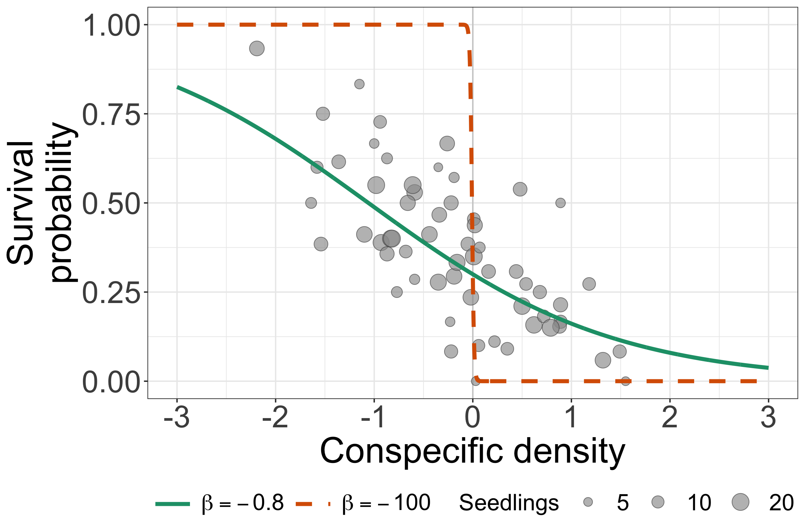
AFEC-X 2026 · 22 October
Day 1: what is the seedling survival probability?
Day 2: does that probability change with conspecific density?
We keep the binomial model and add a predictor.
Understanding Bayesian regression
Core: regression results, sampling checks and one predictive-check figure.
Optional reference: new fitting and further computational or predictive details.
CNDD: in today’s example, higher conspecific density goes with lower seedling survival.
Do species differ in this relationship? Could those differences relate to species abundance?
Today we read one common survival curve. Tomorrow we consider group differences.
Research motivation: Comita et al. 2010, Science.
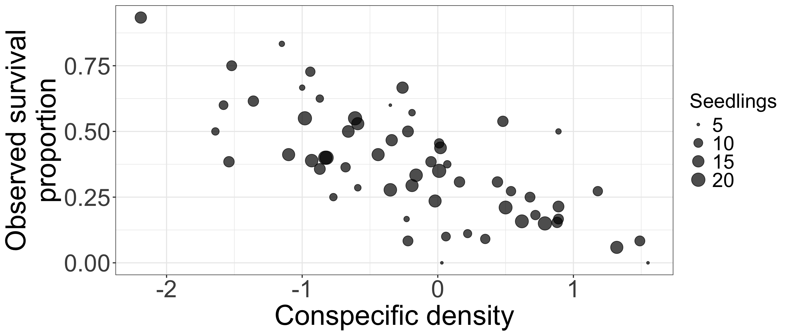
Which way would you expect the fitted curve to go?
s_i \sim \operatorname{Binomial}(n_i,p_i)
Now let conspecific density x_i predict p_i.
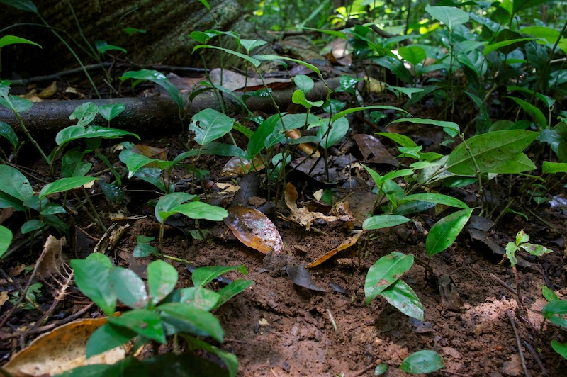
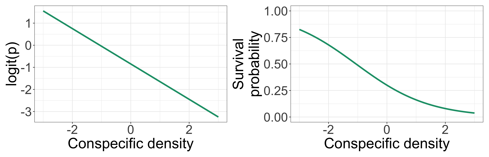
\operatorname{logit}(p_i)=\alpha+\beta x_i,\qquad p_i=\operatorname{logit}^{-1}(\alpha+\beta x_i)
\operatorname{logit}(p)=\log\!\left(\frac{p}{1-p}\right),\qquad \operatorname{logit}^{-1}(z)=\frac{1}{1+e^{-z}}
Observed data
Statistical model
s_i \sim \operatorname{Binomial}(n_i,p_i)
\operatorname{logit}(p_i)=\textcolor{#d95f02}{\alpha}+\textcolor{#d95f02}{\beta}\,x_i
With the observed data fixed, this model defines the likelihood for \alpha and \beta.
Unknown parameters: \textcolor{#d95f02}{\alpha,\beta}
Prior — Before seeing data
\textcolor{#d95f02}{\alpha}\sim\operatorname{Normal}(0,2.5)
\textcolor{#d95f02}{\beta}\sim\operatorname{Normal}(0,2.5)
The priors are independent. The second argument is the SD.
Data
→
via the
likelihood
Posterior — After seeing data
p(\textcolor{#d95f02}{\alpha,\beta}\mid\mathrm{data})

Points: observed proportions.
Curves: illustrative, not fitted.
\begin{aligned} \text{Very diffuse:}\quad &\beta\sim\mathcal N(0,10^4)\\[6pt] \text{Weakly informative:}\quad &\beta\sim\mathcal N(0,2.5) \end{aligned}
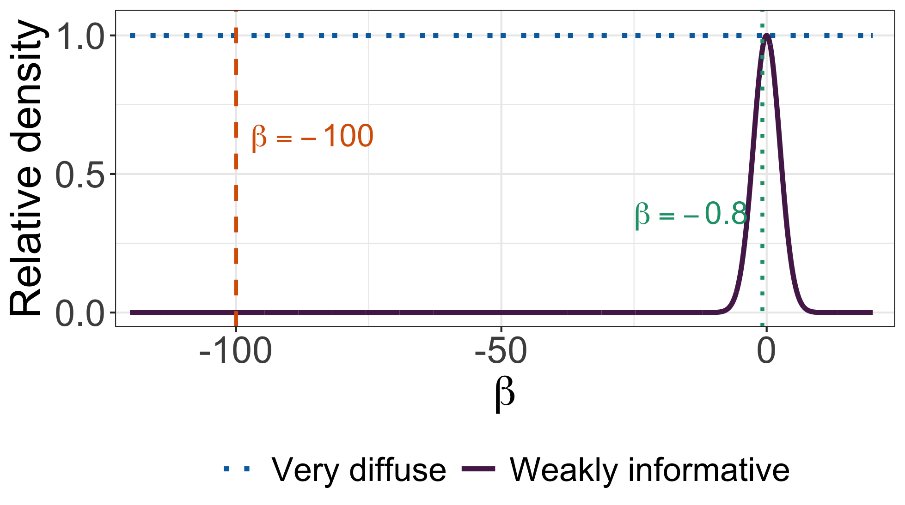
We use simulation to approximate the posterior.
MCMC generates a sequence of parameter values from the posterior distribution.
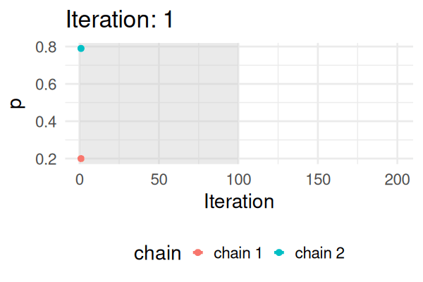
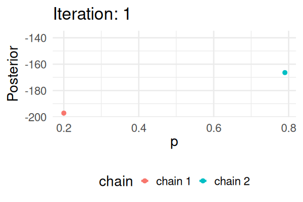
The sampled values describe uncertainty about the parameter.
One parameter: save a value of p.
Our logistic model: save a pair (\alpha,\beta).
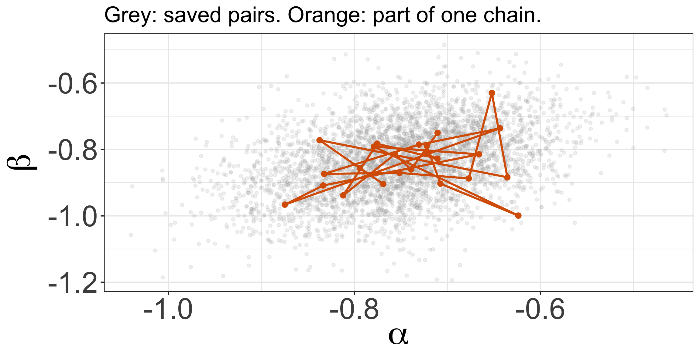
Before interpreting these draws, did the simulation explore the posterior adequately?
Compare several chains before using the draws for survival predictions.
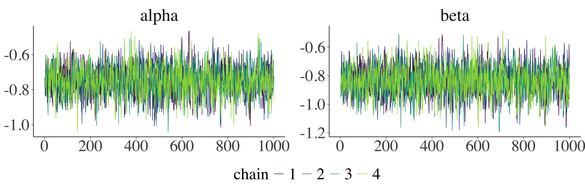
More complex models or problems in model formulation can make posterior sampling difficult.
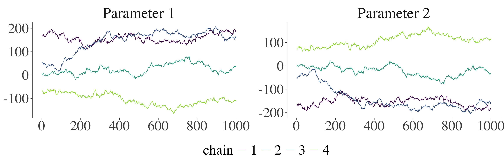
Here, the chains remain in different regions.
We should investigate before interpreting these draws.
p(x)=\operatorname{logit}^{-1}(\alpha+\beta x)
| Draw | α | β |
|---|---|---|
| 1 | -0.769 | -0.904 |
| 2 | -0.794 | -0.856 |
| 3 | -0.794 | -0.856 |
| 4 | -0.838 | -0.772 |
| 5 | -0.636 | -0.884 |
| 6 | -0.652 | -0.630 |
| 7 | -0.677 | -0.887 |
| 8 | -0.752 | -0.871 |
| 9 | -0.833 | -0.874 |
| 10 | -0.731 | -0.785 |
| ⋮ | ⋮ | ⋮ |
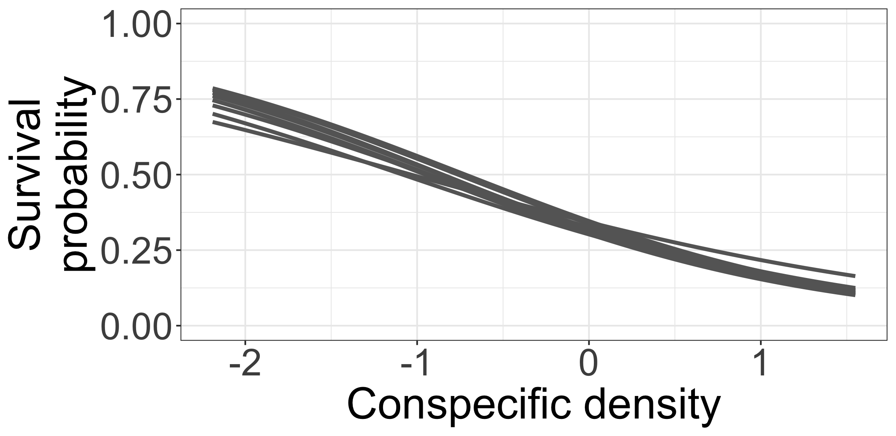
Ten possible curves for the same survival relationship.
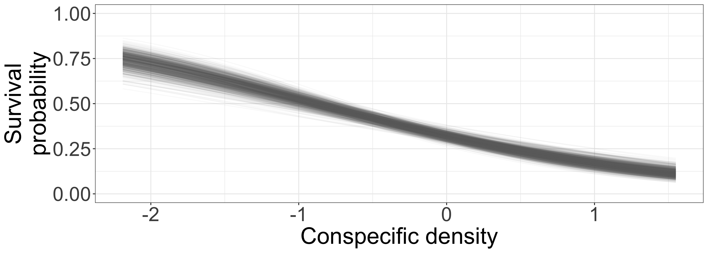
Each curve comes from one posterior draw.
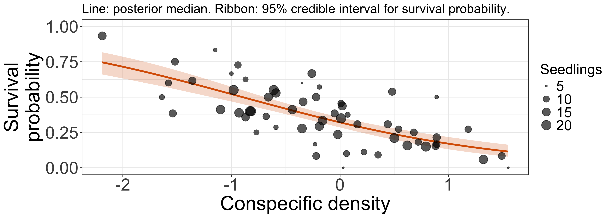
Each point represents one quadrat.
The ribbon shows uncertainty about survival probability at each density.
Stan is a probabilistic programming language and an engine for Bayesian inference.
Stan uses MCMC (primarily NUTS, a variant of HMC) to draw samples from posterior distributions.
day2/exercise-student.qmd
We follow the R code and its outputs:
Offline outputs: day2/results.html.
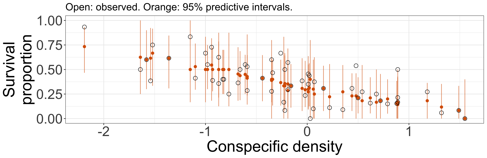
Compare observed proportions with replicated data at the same density and seedling count.
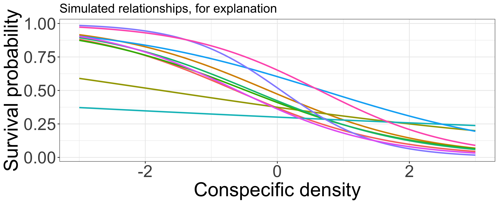
Some species have few seedlings. How can we estimate their relationships?